|
Shamman Noor Shoudha I am working as a Senior Systems Engineer in the Modem Systems Team at Qualcomm. I am working on developing ML model training and quantization pipelines for 5G and 6G modems. |

|
ResearchI'm interested in Wireless Communication algorithm development, Wireless Localization using Wi-Fi, Bluetooth, GNSS signals, Machine Learning model quantization pipeline development. |
| 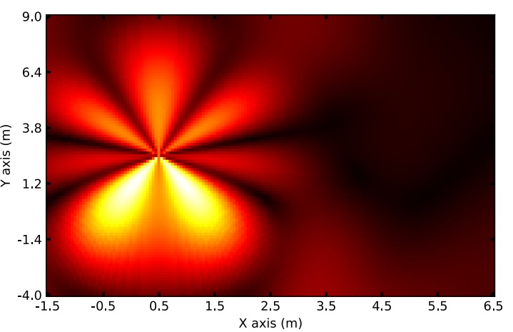 |
OpenPose-Inspired Reduced-Complexity CSI-based WiFi Indoor Localization
Mohamed Hany Mahmoud, Shamman Noor Shoudha, Mohamed Abdallah, Naofal Al-Dhahir IEEE Communications Letters, 2024 We use multi-stage Convolutional Neural Network to estimate Wi-Fi signal-based location. |
| 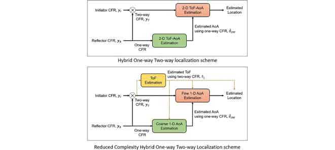 |
WiFi 5GHz CSI-based single-AP localization with centimeter-level median error
Shamman Noor Shoudha, Sherief Helwa, Jayson P Van Marter, Murat Torlak, Naofal Al-Dhahir IEEE Access, 11, 2023 We apply model-based localization algorithms to achieve centimeter-level accuracy in challenging multipath environments. |
| 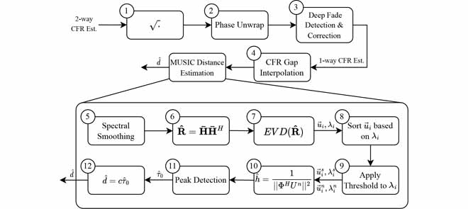 |
Bridging the performance gap between two-way and one-way CSI-based 5 GHz WiFi ranging
Sherief Helwa, Jayson P Van Marter, Shamman Noor Shoudha, Matan Ben-Shachar, Yaron Alpert, Anand G Dabak, Murat Torlak, Naofal Al-Dhahir IEEE Access, 11, 2023 We bridge WiFi ranging performance using one-way Channel State Information (CSI) compared to two-way CSI. |
| 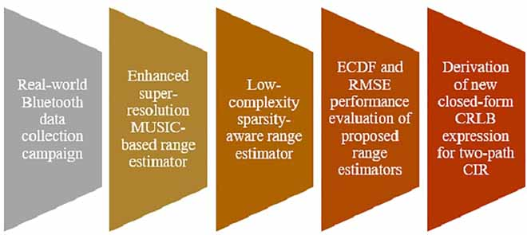 |
Reduced-Complexity Decimeter-Level Bluetooth Ranging in Multipath Environments
Shamman Noor Shoudha, Jayson P Van Marter, Sherief Helwa, Anand G Dabak, Murat Torlak, Naofal Al-Dhahir IEEE Access, 10, 2022 We apply model-based ranging algorithms to achieve decimeter-level accuracy in challenging multipath environments. |
| 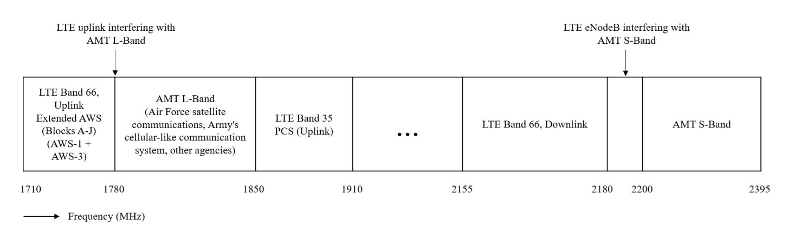 |
Joint LTE Uplink Interference and Multipath Suppression for Aeronautical Telemetry using MMSE Interference Canceler
Shamman Noor Shoudha, Mohammad Saquib International Foundation for Telemetering, 2019 We address the use of a minimum-mean-square-error (MMSE) interference canceler for mitigating the Long-Term Evolution (LTE) uplink interference and multipath in Aeronautical Telemetry system. |
| 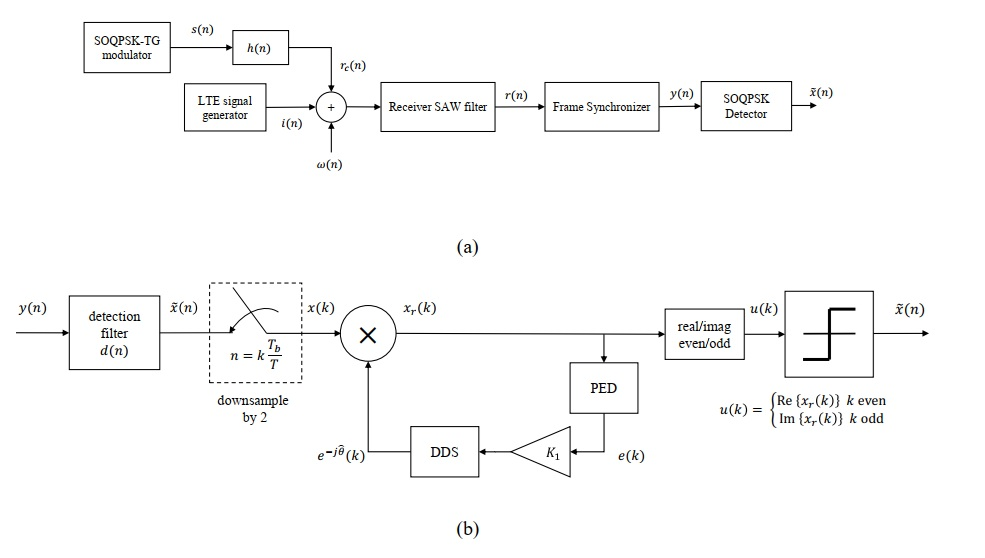 |
Co-Existence of Aeronautical Mobile Telemetry and LTE Systems in the S-Band
Shamman Noor Shoudha, Mohammad Saquib International Foundation for Telemetering, 2019 We analyze the effect of Long-Term Evolution (LTE) uplink interference on the performance of Aeronautical Telemetry Upper L-band users. |
| 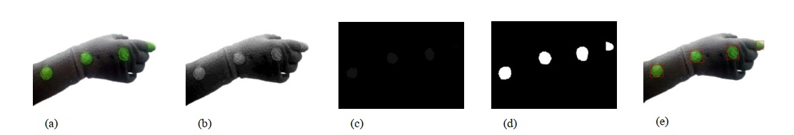 |
Real time hand movement controlled robotic arm for risk prevention
Shamman Noor Shoudha, Jamal Ahmed Shohan, Mashrura Sharmin Waresi, Asif Ahmed, Asir IntisarKhan, Celia Shahnaz, Sheikh Anwarul Fattah IEEE Region 10 Humanitarian Technology Conference (R10-HTC), 2017 We propose an "Artificial Human Hand Model" which can precisely follow the real movements of human hand by means of image processing thereby avoiding sensor noise and damage and providing more adjustable response. |
| 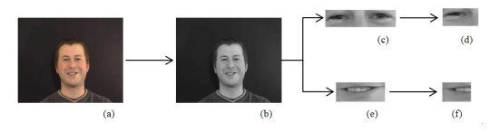 |
Audio visual emotion recognition using cross correlation and wavelet packet domain features
Shamman Noor Shoudha, Ehsanul Dhrubo, Ahmed Tahsin Minhaz, Celia Shahnaz, Sheikh Anwarul Fattah IEEE International WIE Conference on Electrical and Computer Engineering (WIECON-ECE), 2017 We describe a method for recognizing emotions from human Speech and visual data for machine to understand. |
Projects |
| 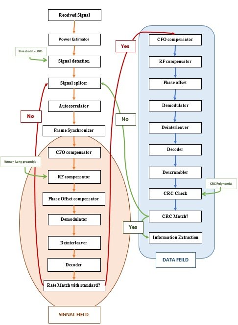 |
Wi-Fi Sniffer
Groupmates: Single Author Developed an ERP-OFDM receiver for IEEE 802.11g Wi-Fi packets (2.400-2.4835 GHz) with operations: signal detection, frame synchronization, CFO compensation, phase tracking and correction, channel estimation and equalization, RF compensation, PHY and MAC PDUs decoding, and network SSID capture [Code] |
| 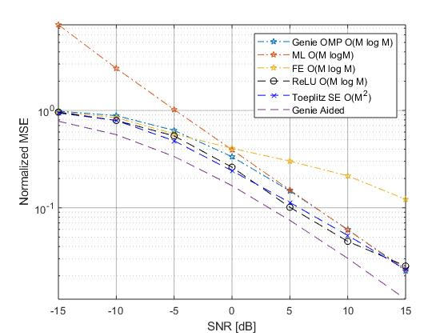 |
Learning MMSE Channel Estimator
Groupmates: Single Author I implemented this paper on Convolutional Neural Network (CNN)-based Minimum Mean Square Error (MMSE) channel estimator design to achieve significantly reduced complexity. [Code] |
| 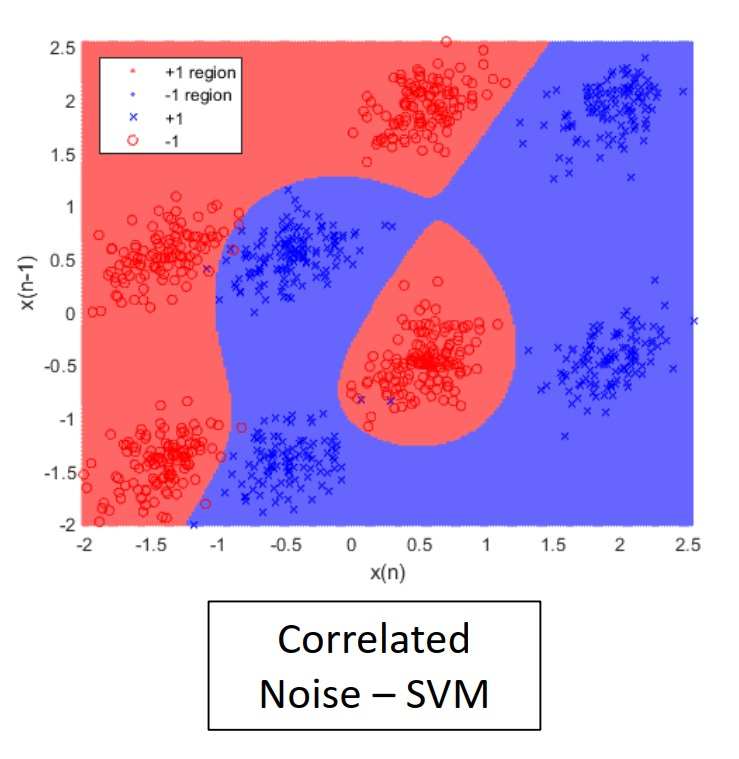 |
Non-linear SVM Equalization
Groupmates: Bhaskar Raj Upadhyay We implemented Support Vector Machine (SVM) technique-based detection and equalization system with Model Simulation Results and Decision Boundaries BER Analysis for non-linear equalization methods. [Code] |
| 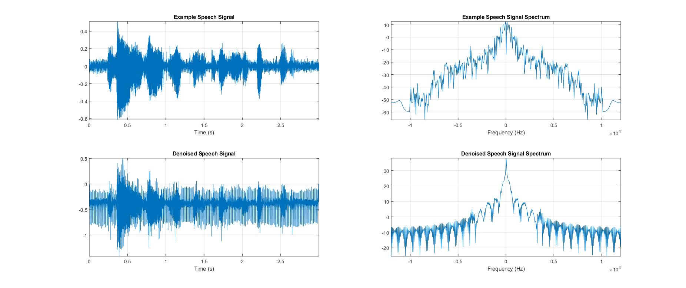 |
Speech denoising using Fully Connected Neural Networks
Groupmates: Soundarya Srinivasan We developed a Fully Connected Neural Network (FCNN)-based speech denoising method for collected real-world noisy data (speech and machinery). [Code] |
| 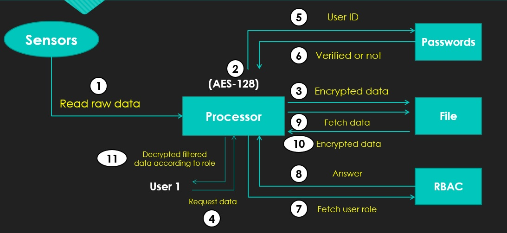 |
IoT Devices, Sensors and User Management System
Groupmates: Kashish Kitawat, Pallawi Kumari, Pavani Sapparapu We developed a method to encrypt sensor raw data, read from the sensors connected to Raspberry Pi. We use AES-128 to decrypt data and transferred the filtered data according to the Role (Role-Bases Access Control) using Key Management. [Code] |
| 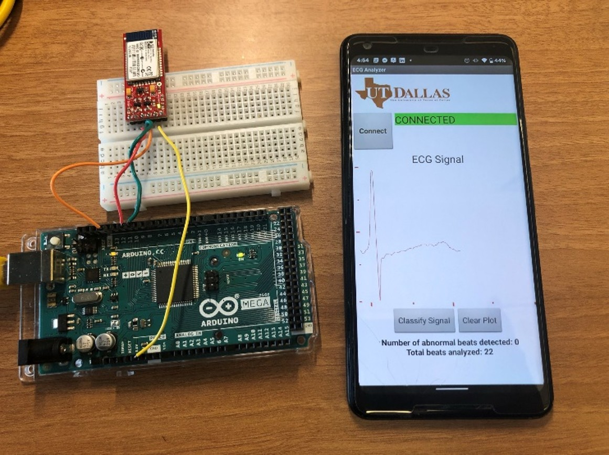 |
Android App for ECG Classification
Groupmates: Joseph David Epperson, Jason Hoff We implemented an ECG signal classifier in MATLAB and developed an Android app to scan real-world ECG signal and perform real-time classification on smartphone. [Code] |
Miscellanea |
|
Source code from Jon Barron's website. |